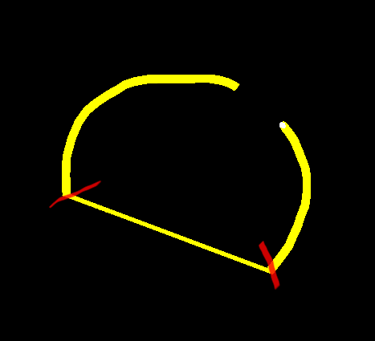

sabotage3d
I am trying to delete points from RibbonTrail, but I am getting artefacts. In my test I am drawing a circle and removing some points, but I am getting a line inside the gap. The yellow is the trail the red is the area where I am deleting. My approach is inside the UpdateTrail method, if I press a button to delete a range of points. What would be the correct way of approaching this?
points_.Erase(points_.Begin()+10, points_.End()-5);
